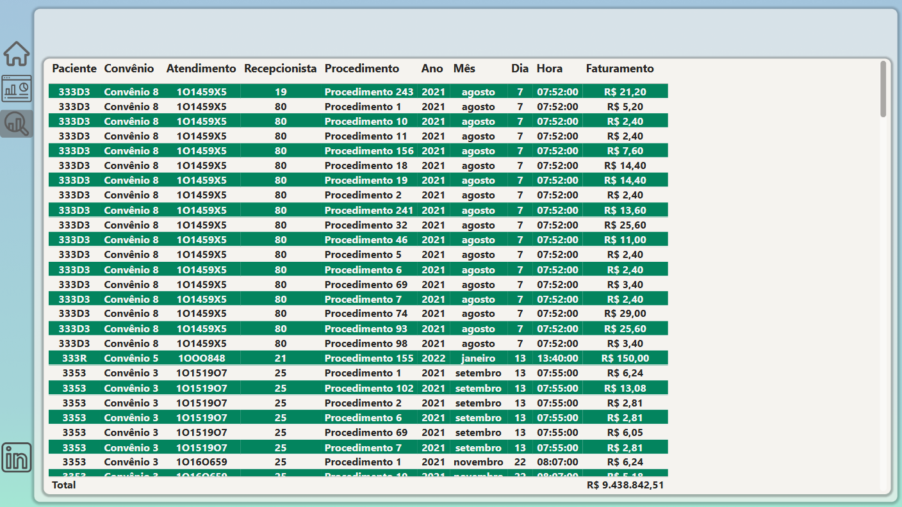

Explicação Primeira Aba

Nessa aba foi adicionado gráficos com as informações sobre as Faturamento, Meta, Atendimento e Clientes. Adicionado também
gráficos co o faturamento mensal, por convênio e procedimento; Gráfico com a quantidade de atendimento por dia e hora.
Explicação Segunda Aba
Nessa aba foi adicionado gráficos com as informações em uma tabela de analítico para facilitar possivel verificação nos dados caso preciso.
Com essa apresentação, é possível alinhar precisamente os dados e facilitar a visualização de problemas, ajudando assim a descobrir se o Faturamento está dentro do esperado, qual a quantidade de atendimento e pacientes.